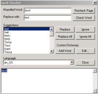

{kind=link}


It was written using wxWindows so that it could be useful to developer's across different platforms. However, it's only been developed and tested on my part under Linux and Windows. It has also only been tested with the aspell spell checker library.
Theoretically, you should be able to implement any spell check engine (aspell, pspell, ispell, MySpell). However, a class derived from wxSpellCheckEngineInterface must be written for wxSpellChecker to be able to use the spell check engine. Various spell check interfaces have been written to mimic to look of the spell check dialogs used by Wintertree Sentry spell checker, Mozilla spell checker, the Outlook97 spell checker, and AbiWord. A basic command-line interface was also created. However, this command-line interface only works under Linux when linked to the wxWindows library. On Windows it needs to link to the wxBase library to be able to write output to the command line.
Custom interfaces should be easy to create. They should be derived from wxSpellCheckUserInterface though. For dialog-based interfaces, deriving from wxSpellCheckDialogInterface would be more appropriate.
ScreenShots
| Operating System | Mozilla-like | Wintertree Sentry-like | Outlook-like | Abiword |
|---|---|---|---|---|
| Linux | |
|
|
|
| Win32 |  | |
|
|
C++ Usage:
To use the spell checker in a C++ program, you should be able to create a new spell checker with the following code:
wxSpellCheckEngineInterface* pSpellChecker = new AspellInterface(new MySpellingDialog(NULL));
Here is the code to spell check the text:
pSpellChecker->InitializeSpellCheckEngine();
wxString strCorrectedText = pSpellChecker->CheckSpelling(strTextToSpellCheck);
pSpellChecker->UninitializeSpellCheckEngine();
C/VB Usage:
The external 'C' interface to the library hasn't yet been written.
However, when completed, the API should be similar to the following:
char** wxSpellChecker_GetSuggestions(const char*)char* wxSpellChecker_SpellCheck(const char*)int wxSpellChecker_IsValidWord(const char*)void wxSpellChecker_AddWordToDictionary(const char*)void wxSpellChecker_SetOption(const char*, const char*)char* wxSpellChecker_GetOption(const char*)
News
TODO